The Book of R: Chapter 7 (plotting)
https://repro.elifesciences.org/example.html#
### Using R's built in plot command
plot(c(1,2,3))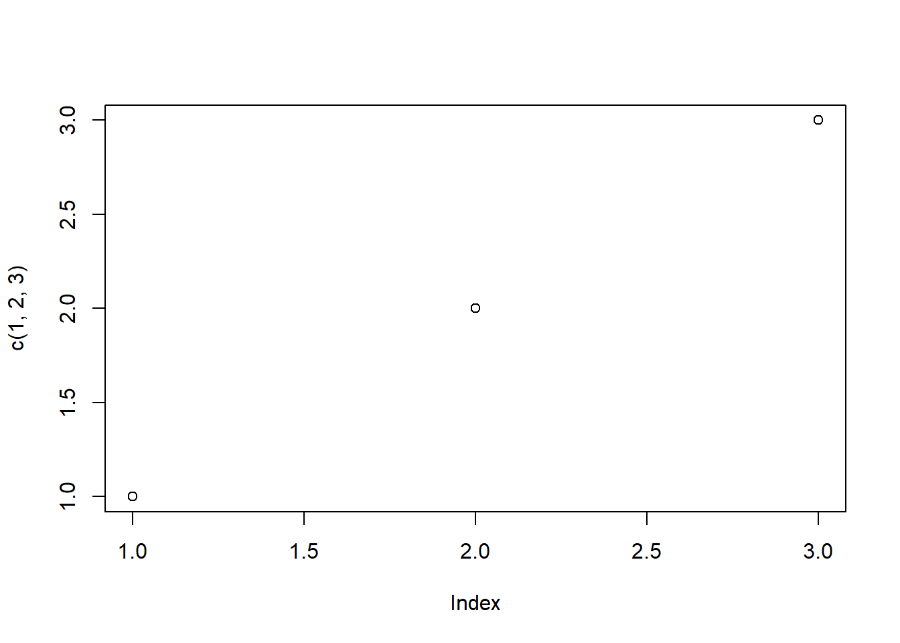
plot(c(1,2,3), c(2,3,4))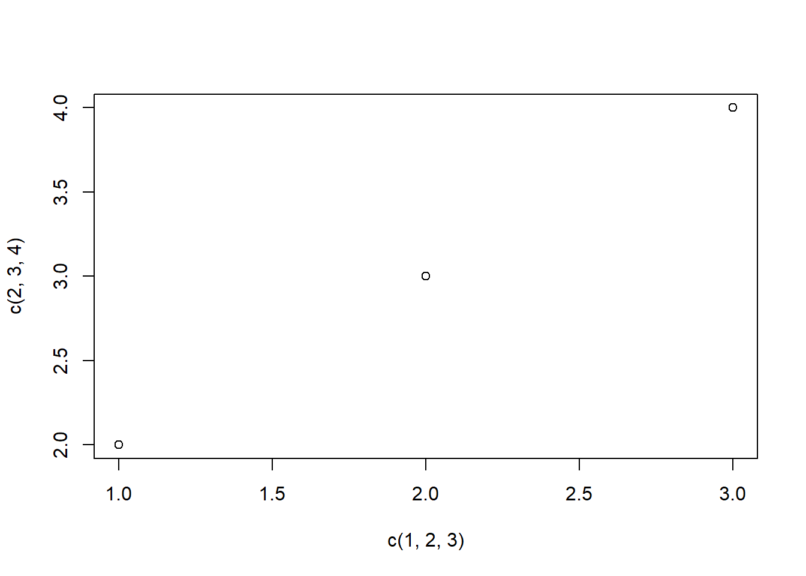
#cosine curve
x=seq(from = 0, to = 20, by = 0.05)
x=cos(x)
plot(x)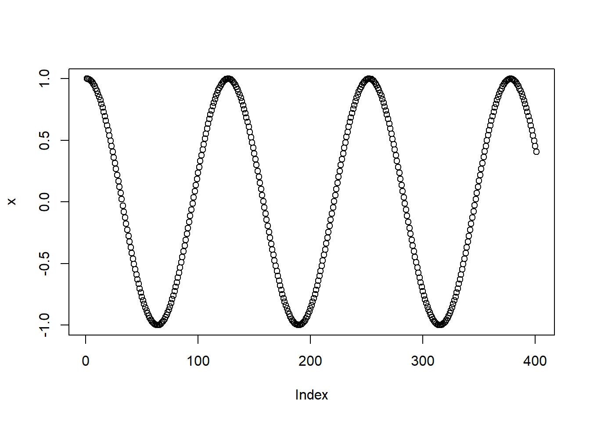
#plot options
#type: plot type e.g. lines connecting data points
#main, xlab, ylab: title, x and y axis labels
#col: colour options
#pch: point style
#cex: point size
#lty: line style
#lwd: line width
#xlim, ylim: x and y axis range
#adding a title
plot(c(1,2,3), c(2,3,4), main="My plot")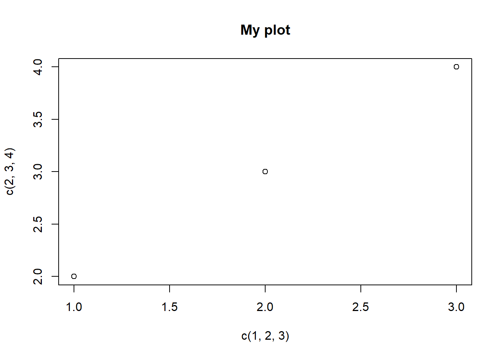
#adding labels
plot(c(1,2,3), c(2,3,4), xlab="points 1", ylab="points 2")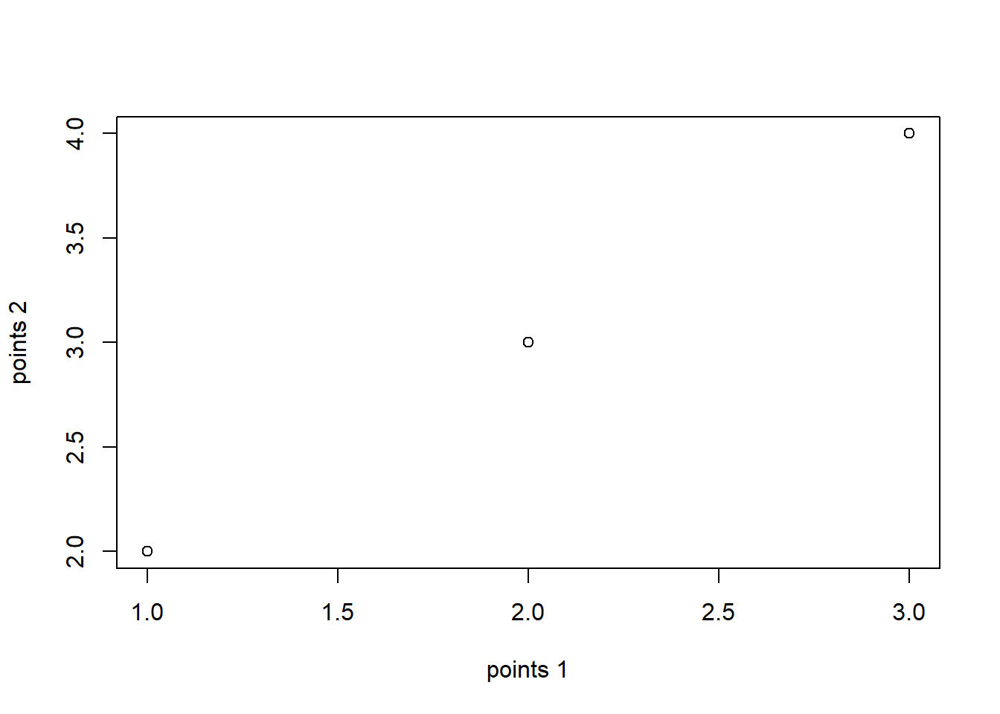
#colours
colors() #shows all the colours defined by default in R## [1] "white" "aliceblue" "antiquewhite"
## [4] "antiquewhite1" "antiquewhite2" "antiquewhite3"
## [7] "antiquewhite4" "aquamarine" "aquamarine1"
## [10] "aquamarine2" "aquamarine3" "aquamarine4"
## [13] "azure" "azure1" "azure2"
## [16] "azure3" "azure4" "beige"
## [19] "bisque" "bisque1" "bisque2"
## [22] "bisque3" "bisque4" "black"
## [25] "blanchedalmond" "blue" "blue1"
## [28] "blue2" "blue3" "blue4"
## [31] "blueviolet" "brown" "brown1"
## [34] "brown2" "brown3" "brown4"
## [37] "burlywood" "burlywood1" "burlywood2"
## [40] "burlywood3" "burlywood4" "cadetblue"
## [43] "cadetblue1" "cadetblue2" "cadetblue3"
## [46] "cadetblue4" "chartreuse" "chartreuse1"
## [49] "chartreuse2" "chartreuse3" "chartreuse4"
## [52] "chocolate" "chocolate1" "chocolate2"
## [55] "chocolate3" "chocolate4" "coral"
## [58] "coral1" "coral2" "coral3"
## [61] "coral4" "cornflowerblue" "cornsilk"
## [64] "cornsilk1" "cornsilk2" "cornsilk3"
## [67] "cornsilk4" "cyan" "cyan1"
## [70] "cyan2" "cyan3" "cyan4"
## [73] "darkblue" "darkcyan" "darkgoldenrod"
## [76] "darkgoldenrod1" "darkgoldenrod2" "darkgoldenrod3"
## [79] "darkgoldenrod4" "darkgray" "darkgreen"
## [82] "darkgrey" "darkkhaki" "darkmagenta"
## [85] "darkolivegreen" "darkolivegreen1" "darkolivegreen2"
## [88] "darkolivegreen3" "darkolivegreen4" "darkorange"
## [91] "darkorange1" "darkorange2" "darkorange3"
## [94] "darkorange4" "darkorchid" "darkorchid1"
## [97] "darkorchid2" "darkorchid3" "darkorchid4"
## [100] "darkred" "darksalmon" "darkseagreen"
## [103] "darkseagreen1" "darkseagreen2" "darkseagreen3"
## [106] "darkseagreen4" "darkslateblue" "darkslategray"
## [109] "darkslategray1" "darkslategray2" "darkslategray3"
## [112] "darkslategray4" "darkslategrey" "darkturquoise"
## [115] "darkviolet" "deeppink" "deeppink1"
## [118] "deeppink2" "deeppink3" "deeppink4"
## [121] "deepskyblue" "deepskyblue1" "deepskyblue2"
## [124] "deepskyblue3" "deepskyblue4" "dimgray"
## [127] "dimgrey" "dodgerblue" "dodgerblue1"
## [130] "dodgerblue2" "dodgerblue3" "dodgerblue4"
## [133] "firebrick" "firebrick1" "firebrick2"
## [136] "firebrick3" "firebrick4" "floralwhite"
## [139] "forestgreen" "gainsboro" "ghostwhite"
## [142] "gold" "gold1" "gold2"
## [145] "gold3" "gold4" "goldenrod"
## [148] "goldenrod1" "goldenrod2" "goldenrod3"
## [151] "goldenrod4" "gray" "gray0"
## [154] "gray1" "gray2" "gray3"
## [157] "gray4" "gray5" "gray6"
## [160] "gray7" "gray8" "gray9"
## [163] "gray10" "gray11" "gray12"
## [166] "gray13" "gray14" "gray15"
## [169] "gray16" "gray17" "gray18"
## [172] "gray19" "gray20" "gray21"
## [175] "gray22" "gray23" "gray24"
## [178] "gray25" "gray26" "gray27"
## [181] "gray28" "gray29" "gray30"
## [184] "gray31" "gray32" "gray33"
## [187] "gray34" "gray35" "gray36"
## [190] "gray37" "gray38" "gray39"
## [193] "gray40" "gray41" "gray42"
## [196] "gray43" "gray44" "gray45"
## [199] "gray46" "gray47" "gray48"
## [202] "gray49" "gray50" "gray51"
## [205] "gray52" "gray53" "gray54"
## [208] "gray55" "gray56" "gray57"
## [211] "gray58" "gray59" "gray60"
## [214] "gray61" "gray62" "gray63"
## [217] "gray64" "gray65" "gray66"
## [220] "gray67" "gray68" "gray69"
## [223] "gray70" "gray71" "gray72"
## [226] "gray73" "gray74" "gray75"
## [229] "gray76" "gray77" "gray78"
## [232] "gray79" "gray80" "gray81"
## [235] "gray82" "gray83" "gray84"
## [238] "gray85" "gray86" "gray87"
## [241] "gray88" "gray89" "gray90"
## [244] "gray91" "gray92" "gray93"
## [247] "gray94" "gray95" "gray96"
## [250] "gray97" "gray98" "gray99"
## [253] "gray100" "green" "green1"
## [256] "green2" "green3" "green4"
## [259] "greenyellow" "grey" "grey0"
## [262] "grey1" "grey2" "grey3"
## [265] "grey4" "grey5" "grey6"
## [268] "grey7" "grey8" "grey9"
## [271] "grey10" "grey11" "grey12"
## [274] "grey13" "grey14" "grey15"
## [277] "grey16" "grey17" "grey18"
## [280] "grey19" "grey20" "grey21"
## [283] "grey22" "grey23" "grey24"
## [286] "grey25" "grey26" "grey27"
## [289] "grey28" "grey29" "grey30"
## [292] "grey31" "grey32" "grey33"
## [295] "grey34" "grey35" "grey36"
## [298] "grey37" "grey38" "grey39"
## [301] "grey40" "grey41" "grey42"
## [304] "grey43" "grey44" "grey45"
## [307] "grey46" "grey47" "grey48"
## [310] "grey49" "grey50" "grey51"
## [313] "grey52" "grey53" "grey54"
## [316] "grey55" "grey56" "grey57"
## [319] "grey58" "grey59" "grey60"
## [322] "grey61" "grey62" "grey63"
## [325] "grey64" "grey65" "grey66"
## [328] "grey67" "grey68" "grey69"
## [331] "grey70" "grey71" "grey72"
## [334] "grey73" "grey74" "grey75"
## [337] "grey76" "grey77" "grey78"
## [340] "grey79" "grey80" "grey81"
## [343] "grey82" "grey83" "grey84"
## [346] "grey85" "grey86" "grey87"
## [349] "grey88" "grey89" "grey90"
## [352] "grey91" "grey92" "grey93"
## [355] "grey94" "grey95" "grey96"
## [358] "grey97" "grey98" "grey99"
## [361] "grey100" "honeydew" "honeydew1"
## [364] "honeydew2" "honeydew3" "honeydew4"
## [367] "hotpink" "hotpink1" "hotpink2"
## [370] "hotpink3" "hotpink4" "indianred"
## [373] "indianred1" "indianred2" "indianred3"
## [376] "indianred4" "ivory" "ivory1"
## [379] "ivory2" "ivory3" "ivory4"
## [382] "khaki" "khaki1" "khaki2"
## [385] "khaki3" "khaki4" "lavender"
## [388] "lavenderblush" "lavenderblush1" "lavenderblush2"
## [391] "lavenderblush3" "lavenderblush4" "lawngreen"
## [394] "lemonchiffon" "lemonchiffon1" "lemonchiffon2"
## [397] "lemonchiffon3" "lemonchiffon4" "lightblue"
## [400] "lightblue1" "lightblue2" "lightblue3"
## [403] "lightblue4" "lightcoral" "lightcyan"
## [406] "lightcyan1" "lightcyan2" "lightcyan3"
## [409] "lightcyan4" "lightgoldenrod" "lightgoldenrod1"
## [412] "lightgoldenrod2" "lightgoldenrod3" "lightgoldenrod4"
## [415] "lightgoldenrodyellow" "lightgray" "lightgreen"
## [418] "lightgrey" "lightpink" "lightpink1"
## [421] "lightpink2" "lightpink3" "lightpink4"
## [424] "lightsalmon" "lightsalmon1" "lightsalmon2"
## [427] "lightsalmon3" "lightsalmon4" "lightseagreen"
## [430] "lightskyblue" "lightskyblue1" "lightskyblue2"
## [433] "lightskyblue3" "lightskyblue4" "lightslateblue"
## [436] "lightslategray" "lightslategrey" "lightsteelblue"
## [439] "lightsteelblue1" "lightsteelblue2" "lightsteelblue3"
## [442] "lightsteelblue4" "lightyellow" "lightyellow1"
## [445] "lightyellow2" "lightyellow3" "lightyellow4"
## [448] "limegreen" "linen" "magenta"
## [451] "magenta1" "magenta2" "magenta3"
## [454] "magenta4" "maroon" "maroon1"
## [457] "maroon2" "maroon3" "maroon4"
## [460] "mediumaquamarine" "mediumblue" "mediumorchid"
## [463] "mediumorchid1" "mediumorchid2" "mediumorchid3"
## [466] "mediumorchid4" "mediumpurple" "mediumpurple1"
## [469] "mediumpurple2" "mediumpurple3" "mediumpurple4"
## [472] "mediumseagreen" "mediumslateblue" "mediumspringgreen"
## [475] "mediumturquoise" "mediumvioletred" "midnightblue"
## [478] "mintcream" "mistyrose" "mistyrose1"
## [481] "mistyrose2" "mistyrose3" "mistyrose4"
## [484] "moccasin" "navajowhite" "navajowhite1"
## [487] "navajowhite2" "navajowhite3" "navajowhite4"
## [490] "navy" "navyblue" "oldlace"
## [493] "olivedrab" "olivedrab1" "olivedrab2"
## [496] "olivedrab3" "olivedrab4" "orange"
## [499] "orange1" "orange2" "orange3"
## [502] "orange4" "orangered" "orangered1"
## [505] "orangered2" "orangered3" "orangered4"
## [508] "orchid" "orchid1" "orchid2"
## [511] "orchid3" "orchid4" "palegoldenrod"
## [514] "palegreen" "palegreen1" "palegreen2"
## [517] "palegreen3" "palegreen4" "paleturquoise"
## [520] "paleturquoise1" "paleturquoise2" "paleturquoise3"
## [523] "paleturquoise4" "palevioletred" "palevioletred1"
## [526] "palevioletred2" "palevioletred3" "palevioletred4"
## [529] "papayawhip" "peachpuff" "peachpuff1"
## [532] "peachpuff2" "peachpuff3" "peachpuff4"
## [535] "peru" "pink" "pink1"
## [538] "pink2" "pink3" "pink4"
## [541] "plum" "plum1" "plum2"
## [544] "plum3" "plum4" "powderblue"
## [547] "purple" "purple1" "purple2"
## [550] "purple3" "purple4" "red"
## [553] "red1" "red2" "red3"
## [556] "red4" "rosybrown" "rosybrown1"
## [559] "rosybrown2" "rosybrown3" "rosybrown4"
## [562] "royalblue" "royalblue1" "royalblue2"
## [565] "royalblue3" "royalblue4" "saddlebrown"
## [568] "salmon" "salmon1" "salmon2"
## [571] "salmon3" "salmon4" "sandybrown"
## [574] "seagreen" "seagreen1" "seagreen2"
## [577] "seagreen3" "seagreen4" "seashell"
## [580] "seashell1" "seashell2" "seashell3"
## [583] "seashell4" "sienna" "sienna1"
## [586] "sienna2" "sienna3" "sienna4"
## [589] "skyblue" "skyblue1" "skyblue2"
## [592] "skyblue3" "skyblue4" "slateblue"
## [595] "slateblue1" "slateblue2" "slateblue3"
## [598] "slateblue4" "slategray" "slategray1"
## [601] "slategray2" "slategray3" "slategray4"
## [604] "slategrey" "snow" "snow1"
## [607] "snow2" "snow3" "snow4"
## [610] "springgreen" "springgreen1" "springgreen2"
## [613] "springgreen3" "springgreen4" "steelblue"
## [616] "steelblue1" "steelblue2" "steelblue3"
## [619] "steelblue4" "tan" "tan1"
## [622] "tan2" "tan3" "tan4"
## [625] "thistle" "thistle1" "thistle2"
## [628] "thistle3" "thistle4" "tomato"
## [631] "tomato1" "tomato2" "tomato3"
## [634] "tomato4" "turquoise" "turquoise1"
## [637] "turquoise2" "turquoise3" "turquoise4"
## [640] "violet" "violetred" "violetred1"
## [643] "violetred2" "violetred3" "violetred4"
## [646] "wheat" "wheat1" "wheat2"
## [649] "wheat3" "wheat4" "whitesmoke"
## [652] "yellow" "yellow1" "yellow2"
## [655] "yellow3" "yellow4" "yellowgreen"plot(c(1,2,3), c(2,3,4), col = "red")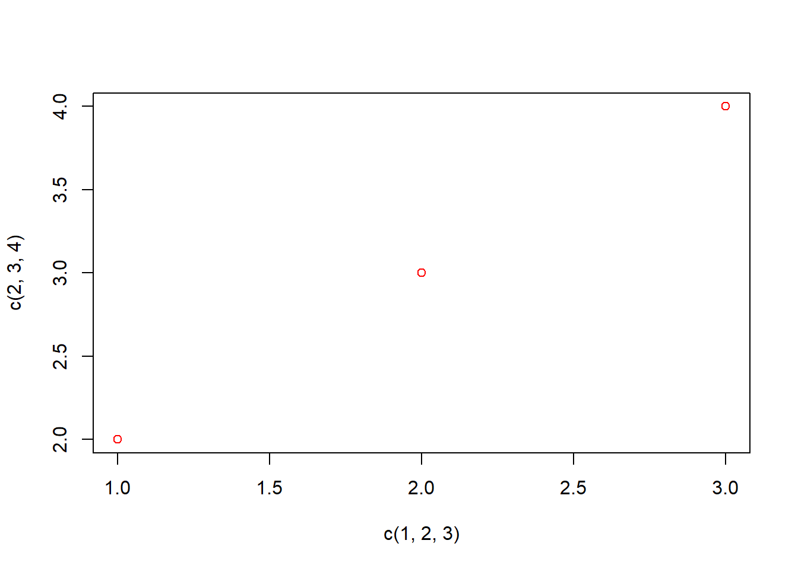
#point style
plot(c(1,2,3), c(2,3,4), pch = 19)plot(c(1,2,3), c(2,3,4), pch = 19, cex = 2) #point size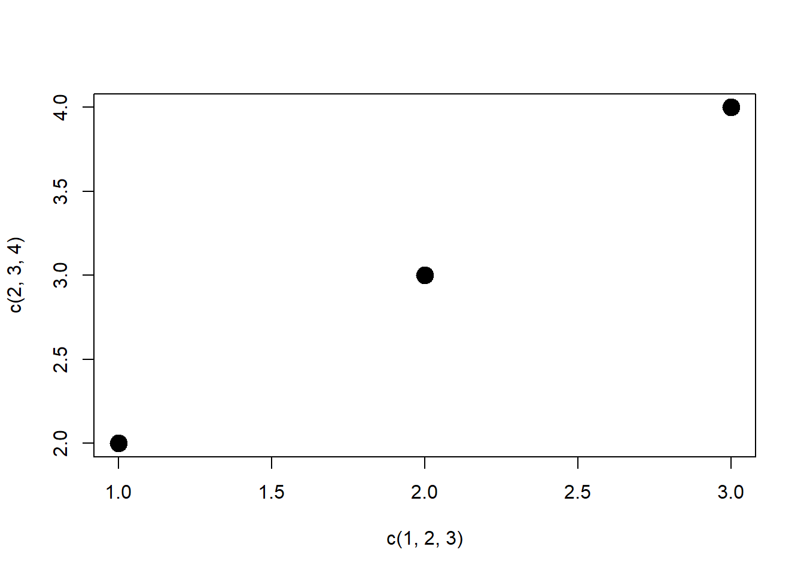
# Many point styles available
# http://www.endmemo.com/program/R/pchsymbols.php
#line style
plot(c(1,2,3), c(2,3,4), type = "l") #line plotplot(c(1,2,3), c(2,3,4), type = "b") #line + points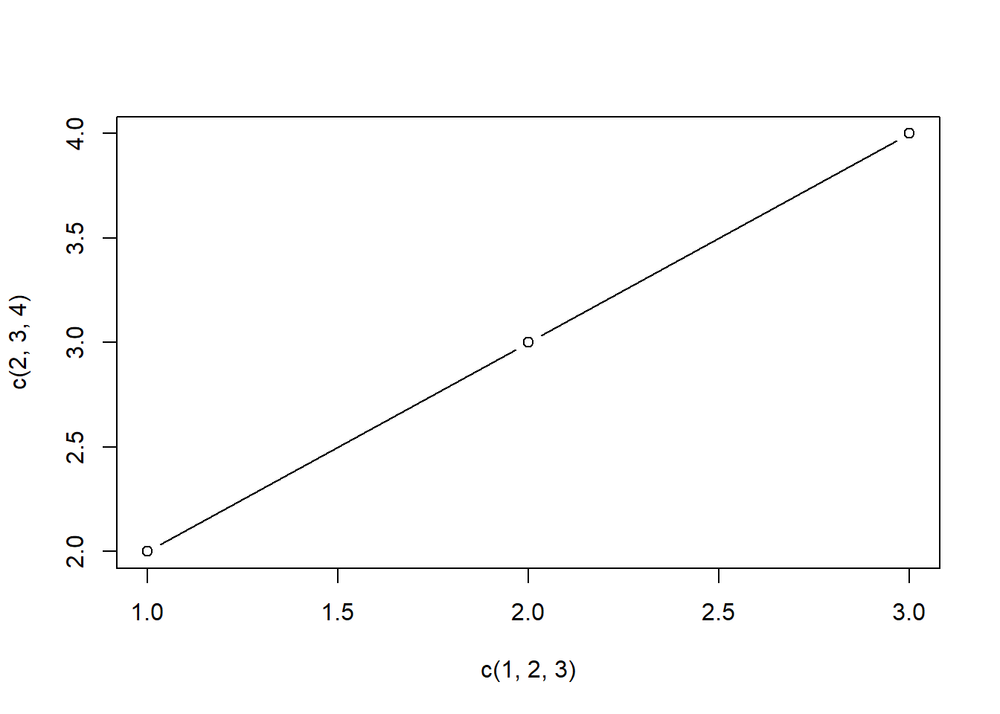
plot(c(1,2,3), c(2,3,4), type = "o") #plot points on top of the line#lty can range from 1 to 6
plot(c(1,2,3), c(2,3,4), type = "o", lty = 1)plot(c(1,2,3), c(2,3,4), type = "o", lty = 2)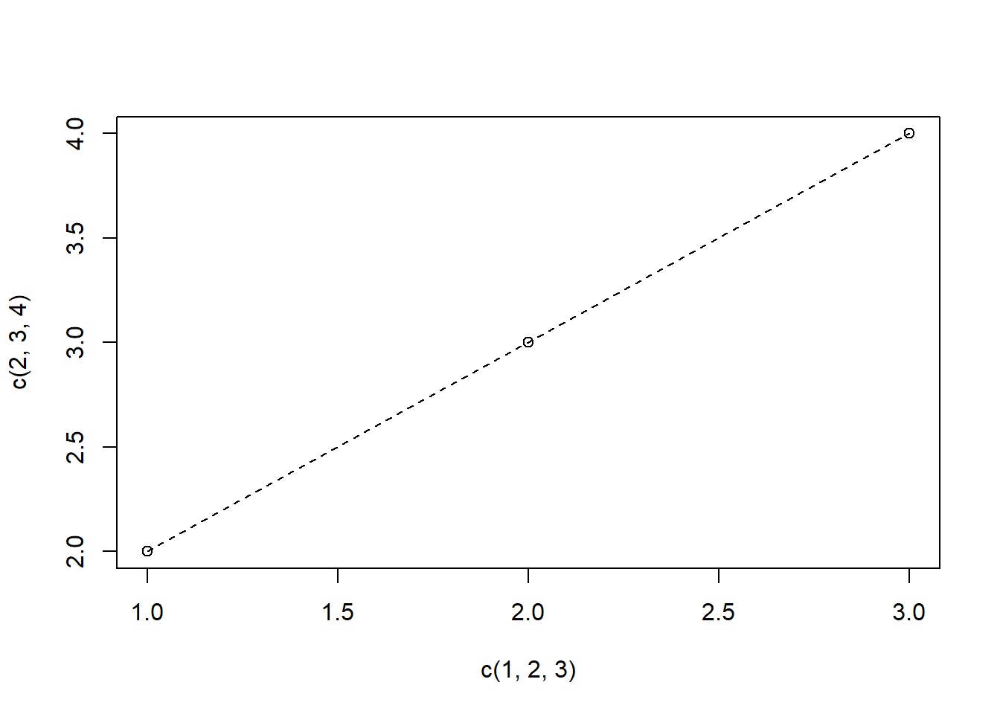
plot(c(1,2,3), c(2,3,4), type = "o", lty = 1, lwd = 3)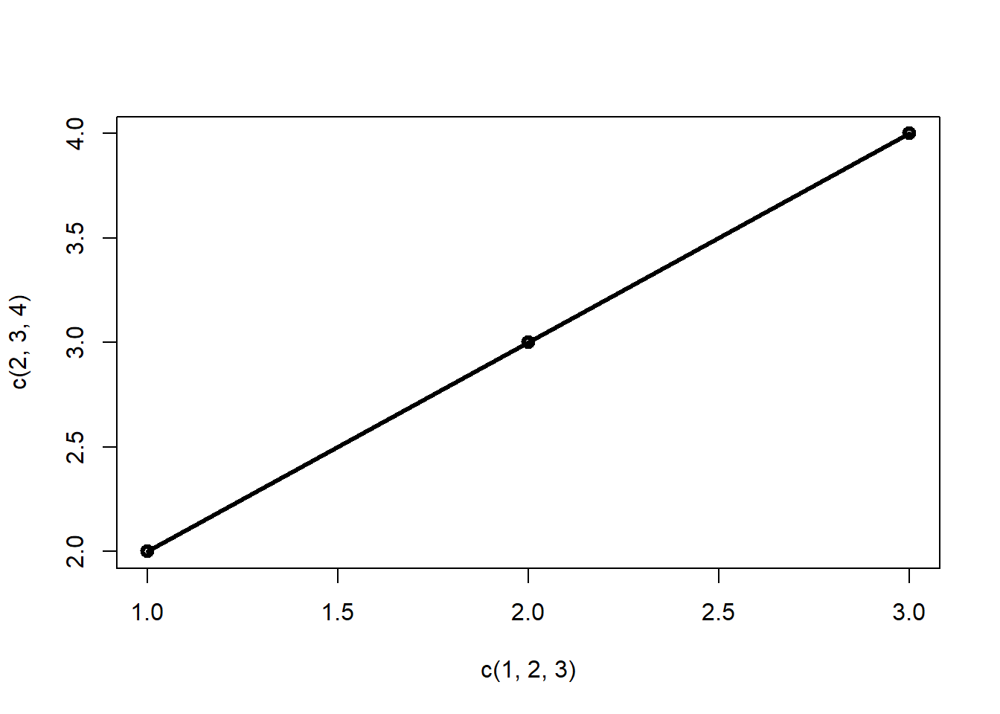
#axis range
#normally R sets the range automatically, but you can set it manually
plot(c(1,2,3), c(2,3,4), xlim = c(0,5))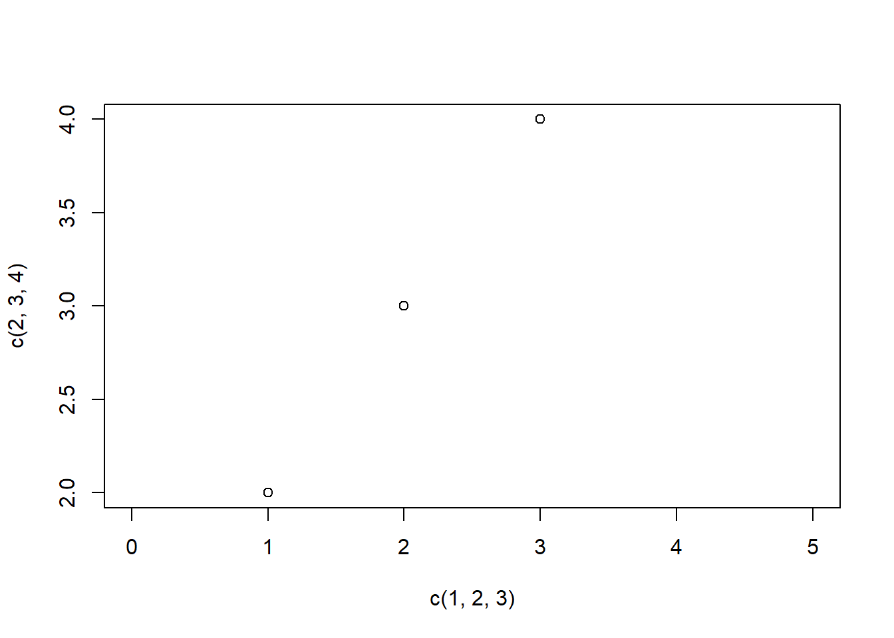
{ #note: in notebooks, the regular plot window is not used, thus is not active. When legend is called, it will not know where the plot is, so surround code with {} to group all the commands together into one command
# Colour and point style
cols <- c(rep('red',50), rep('blue',50), rep('green',50))
types <- c(rep(1, 50), rep(2, 50), rep(3, 50))
plot(iris$Petal.Length, iris$Petal.Width,
main='Iris Petal Variability',
xlab='Petal Length (cm)', ylab='Petal Width (cm)',
col=cols, pch=types, cex.axis=1.5, cex.lab=1.5
)
# Adding a legend
legend('topleft', legend=c('I. setosa', 'I. versicolor', 'I. virginica'), col=c('red', 'blue', 'green'), pch=c(1,2,3))
}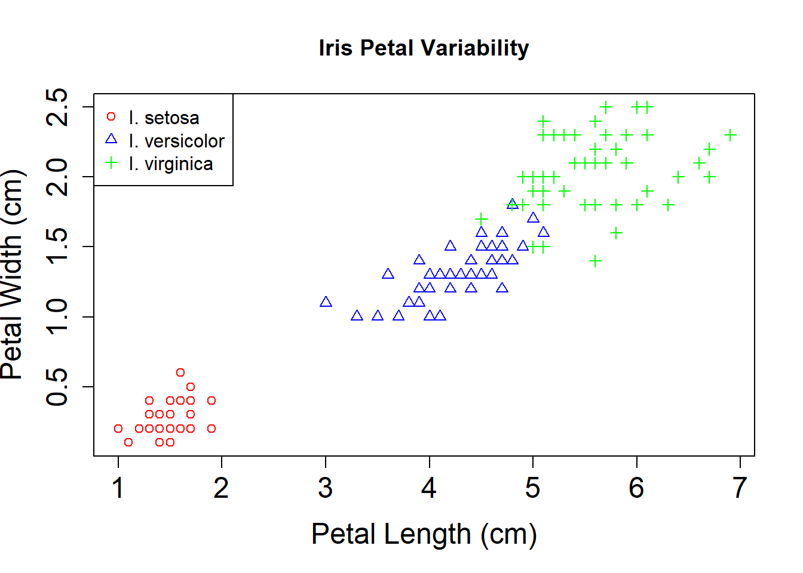
#R creates a new plot with each call to plot(). Other functions allow you to add plot components to an existing plot
x = 1:10
y = 10:1
{
plot(x,y, type = "n") #type n means empty plot
#abline() adds straight lines
abline(h=c(2.5,3,3.5), lty=2, lwd=2) #adds horizontal dashed lines
#add points
points(x[y>5],y[y>5], col = "red", pch = 3)
points(x[y<=5],y[y<=5], col = "blue")
#add line
lines(x,y)
}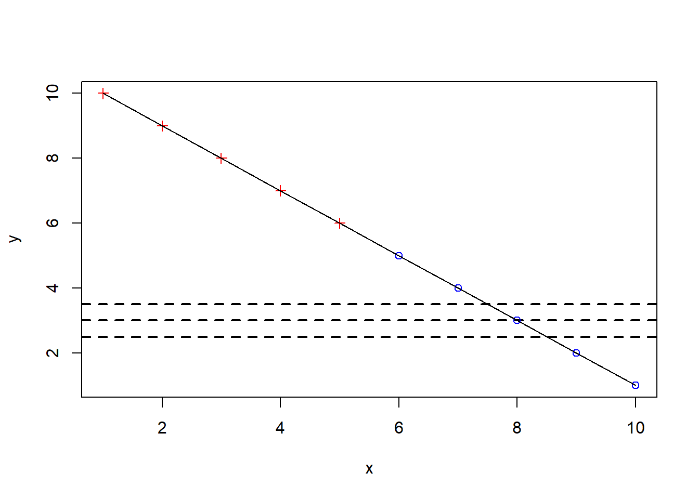
#you can add a legend using legend() as in the previous example# From https://stackoverflow.com/a/30835971
line2user <- function(line, side) {
lh <- par('cin')[2] * par('cex') * par('lheight')
x_off <- diff(grconvertX(c(0, lh), 'inches', 'npc'))
y_off <- diff(grconvertY(c(0, lh), 'inches', 'npc'))
switch(side,
`1` = grconvertY(-line * y_off, 'npc', 'user'),
`2` = grconvertX(-line * x_off, 'npc', 'user'),
`3` = grconvertY(1 + line * y_off, 'npc', 'user'),
`4` = grconvertX(1 + line * x_off, 'npc', 'user'),
stop("Side must be 1, 2, 3, or 4", call.=FALSE))
}
# pdf("thisisapdf.pdf",width=5,height=5)
# png("thisisnotapdf.png",width=5,height=5,units="in",res=300)
par(mar=c(6,6,3,1),mgp=c(2,1,0))
plot(NA,NA,xlim=range(-50:50),ylim=c(0,50^2))
points(1:50,(1:50)^2,type="l",col="blue")
lines(-50:-1,(-50:-1)^2,col="red")
points(0,0,col="purple",pch=16,cex=2)
# now I'm just being silly
mtext("Farts!",side=3,line=1)
mtext("Farts!",side=3,line=0,las=2)
text(0,2500/2,"Middle!")
text(0,0,"I'm over here",srt=45,xpd=NA)
# par("usr")
text(line2user(0.1,2),line2user(0.1,1),xpd=NA,
label="I'm over here now!",srt=45,adj=c(1,0.5))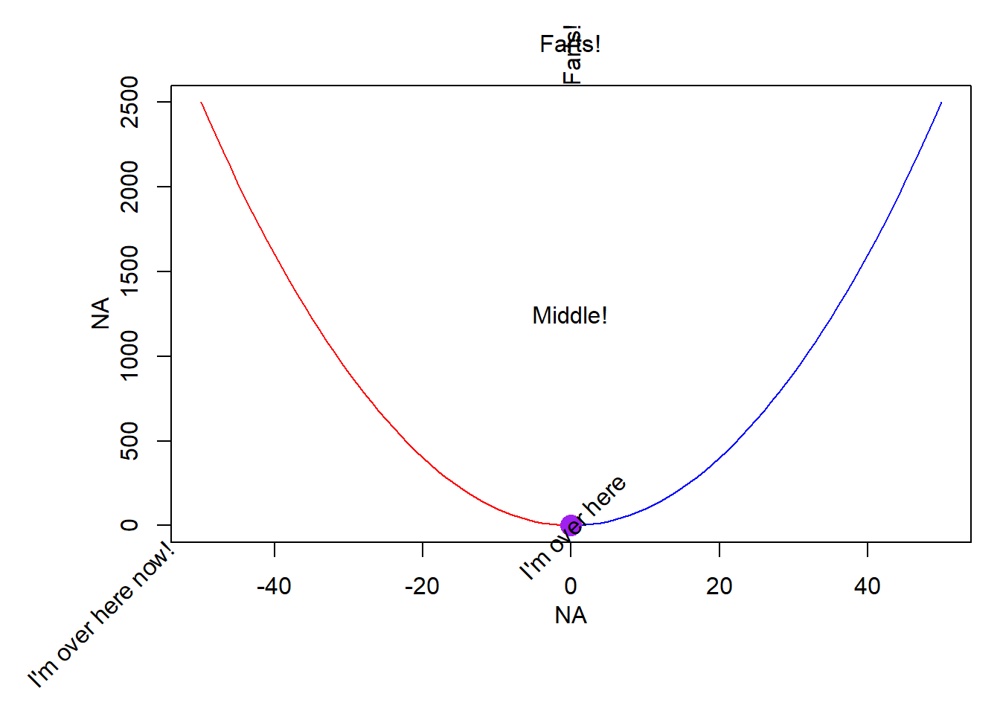
# dev.off()# Read.table yeast_properties.txt (examine the file in a spreadsheet)
yeastdata<-read.table("yeast_properties.txt", header=TRUE)
smoothScatter(yeastdata[,"dnds"], log(yeastdata[,"Degree"]))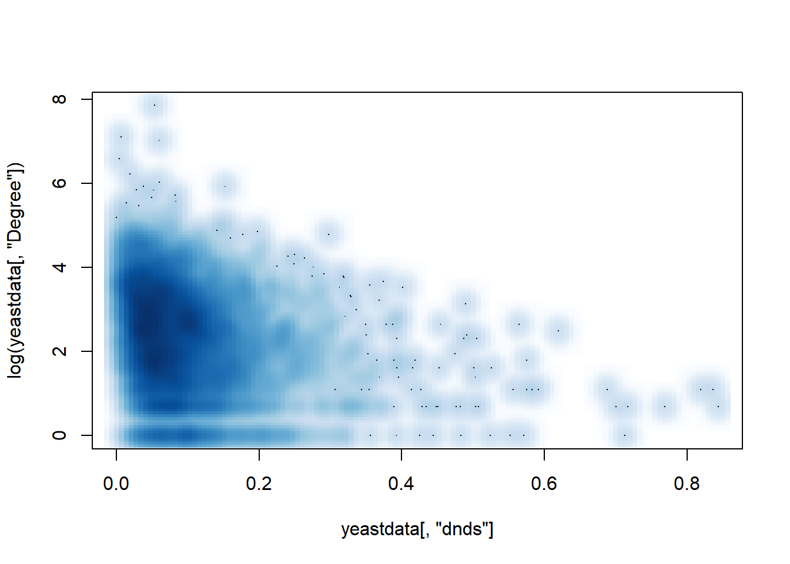
#the par() command supports many graphical parameter settings.
#putting two plots side by side
{
par(mfrow=c(1,2)) #2 plots in 1 row
plot(yeastdata[,"dnds"], log(yeastdata[,"Degree"]))
smoothScatter(yeastdata[,"dnds"], log(yeastdata[,"Degree"]))
par(mfrow=c(1,1)) #back to 1 plot in 1 row (more useful in the R console)
}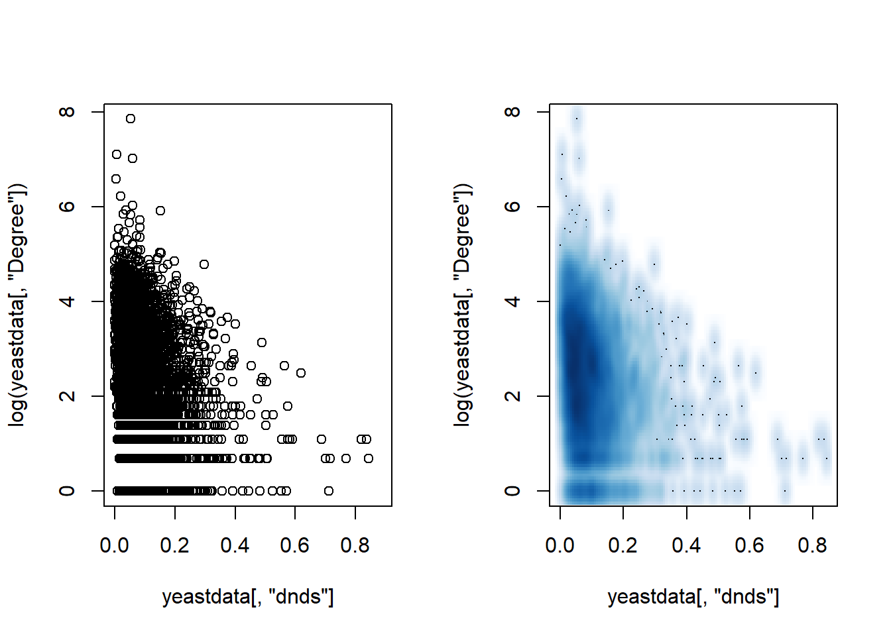
# http://cran.r-project.org/web/packages/lattice/index.html
# install.packages('lattice') #installs from CRAN
library(lattice)xyplot(yeastdata[,"dnds"] ~ log(yeastdata[,"Degree"]) | Age, data=yeastdata )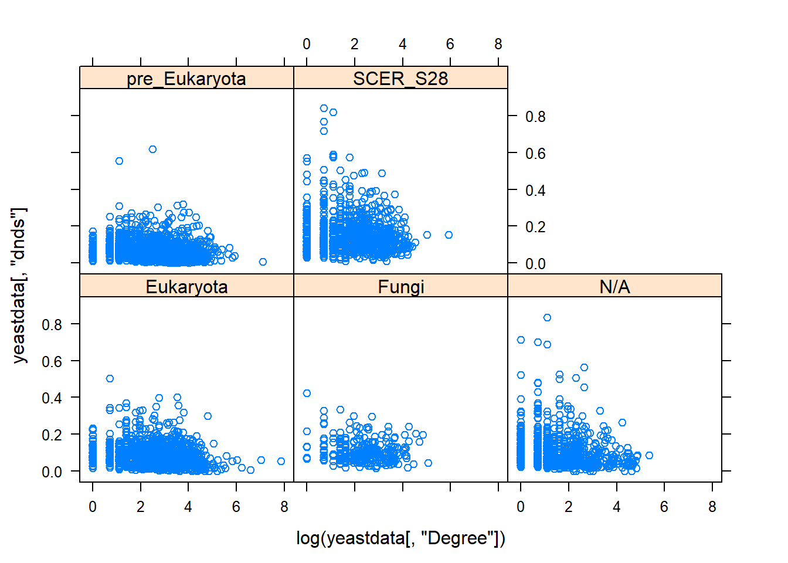
# http://ggplot2.org/
# http://docs.ggplot2.org/current/
# install.packages("ggplot2")
library(ggplot2)#quick plot
plot(1:10, 10:1)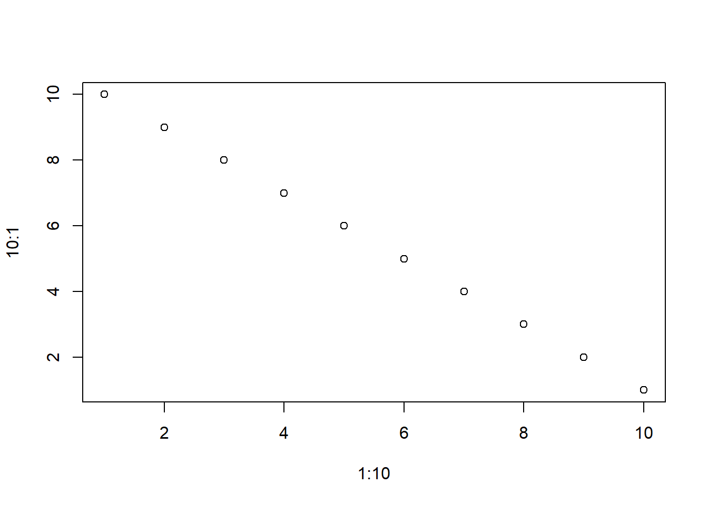
qplot(1:10, 10:1) #notice that ggplot2 looks nicer by default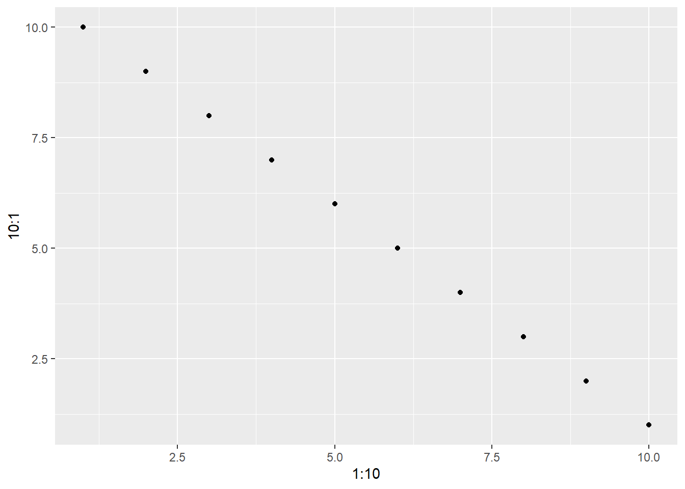
qplot(1:10, 10:1) + geom_line() #add a line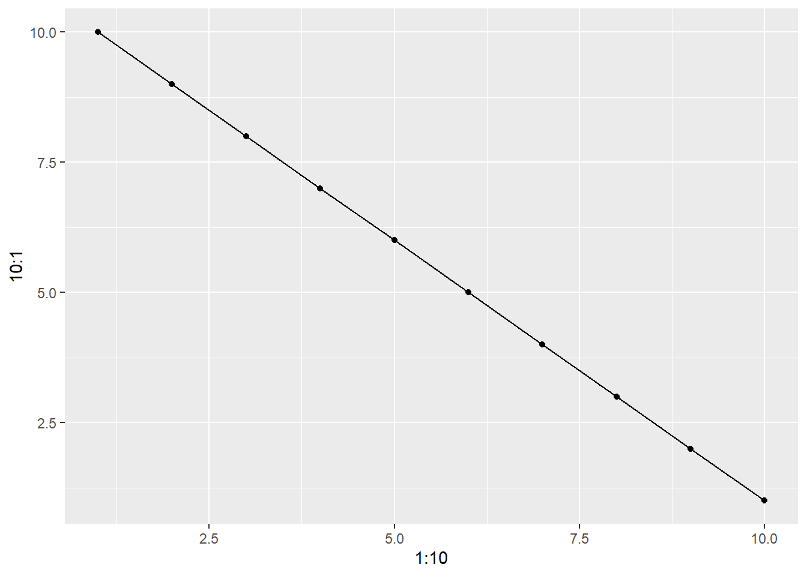
qplot(1:10, 10:1) + geom_line(color="red", size=2, linetype=2) #customize the line style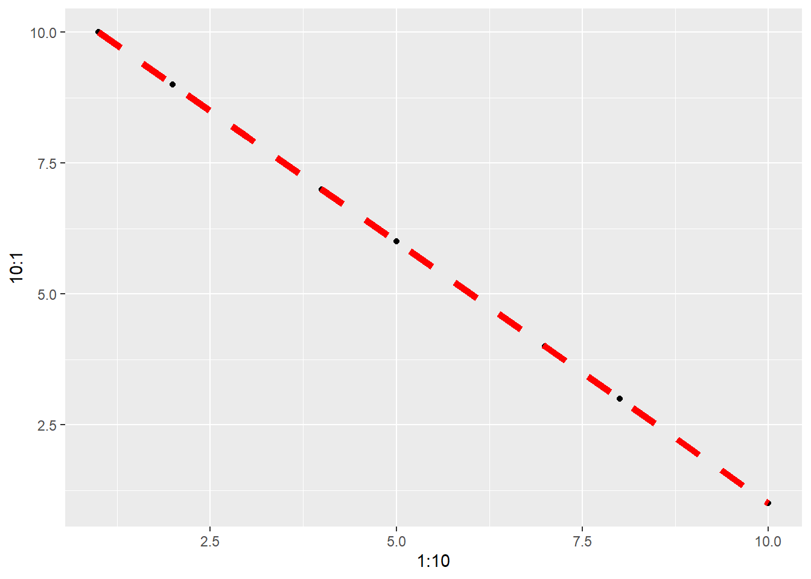
#and the more powerful ggplot command
ggplot(data=yeastdata, aes(x=yeastdata[,"dnds"], y=yeastdata[,"Degree"])) +
geom_point() +
scale_y_log10() +
xlab("dN/dS") +
ylab("Degree")## Warning: Transformation introduced infinite values in continuous y-axis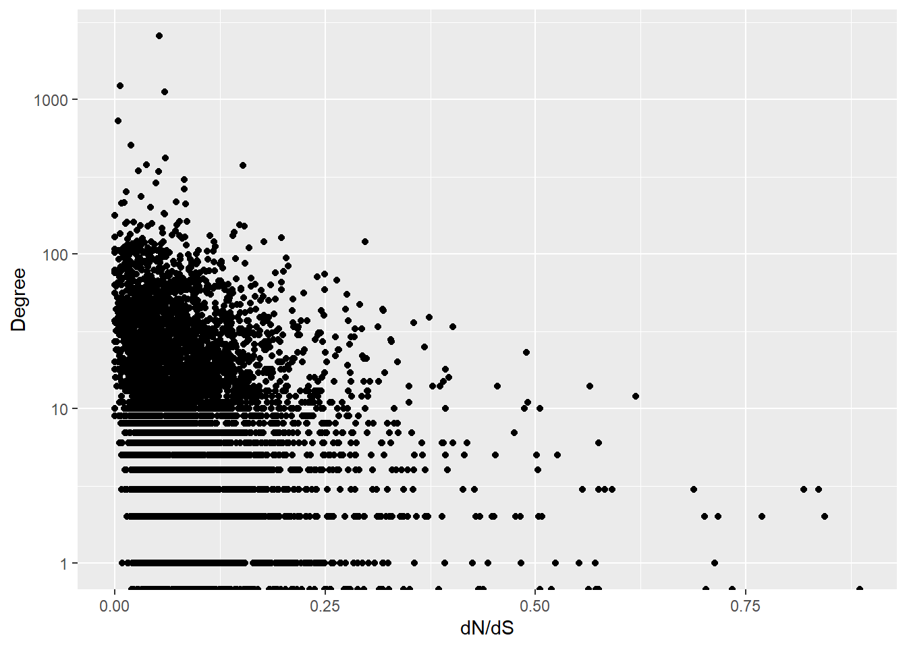
#as you can see, ggplot is more intuitive for building a plot in layers#http://cran.r-project.org/web/packages/RCircos/RCircos.pdf
# install.packages("RCircos")
library(RCircos)#test circos plot
RCircos.Workflow()##
## 1. Load RCircos library:
##
## library(RCircos)
##
## 2. Load chromosome cytoband data:
##
## data(UCSC.HG19.Human.CytoBandIdeogram);
## cyto.info <- UCSC.HG19.Human.CytoBandIdeogram;
##
## # Other chromosome ideogram data installed:
## # UCSC.Mouse.GRCm38.CytoBandIdeogram
## # UCSC.Baylor.3.4.Rat.cytoBandIdeogram
##
## 3. Setup RCircos core components:
##
## RCircos.Set.Core.Components(cyto.info, chr.exclude=NULL,
## tracks.inside=10, tracks.outside=0);
##
## 4. Load input data:
##
## heatmap.data <- read.table("/path/Heatmap.data.txt",
## sep="\t", quote="", head=T);
## hist.data <- read.table("/path/histgram.data.txt",
## sep="\t", quote="", head=T);
## link.data <- read.table("/path/link.data.txt",
## sep="\t", quote="", head=T);
##
## 5. Modify plot parameters if necessary:
##
## rcircos.params <- RCircos.Get.Plot.Parameters()
## rcircos.params$radiu.len <- 1.5;
## RCircos.Reset.Plot.Parameters(rcircos.params);
##
## 6. Open graphic device:
##
## RCircos.Set.Plot.Area();
##
## or submit your own code. For example:
##
## par(mai=c(0.25, 0.25, 0.25, 0.25));
## plot.new();
## plot.window(c(-2.5,2.5), c(-2.5, 2.5));
##
## 7. Call plot function to plot each data track:
##
## RCircos.Chromosome.Ideogram.Plot();
## RCircos.Heatmap.Plot(heatmap.data, data.col=5,
## track.num=1, side="in");
## RCircos.Histogram.Plot(hist.data, data.col=4,
## track.num=4, side="in");
## RCircos.Link.Plot(link.data, track.num=5,
## by.chromosome=FALSE);
##
## 8. Close the graphic device if you was plotting to file:
##
## dev.off();data(UCSC.HG19.Human.CytoBandIdeogram)
cyto.info <- UCSC.HG19.Human.CytoBandIdeogram
{
RCircos.Set.Core.Components(cyto.info, chr.exclude=NULL, 10, 0)
RCircos.Set.Plot.Area()
RCircos.Chromosome.Ideogram.Plot()
}##
## RCircos.Core.Components initialized.
## Type ?RCircos.Reset.Plot.Parameters to see how to modify the core components.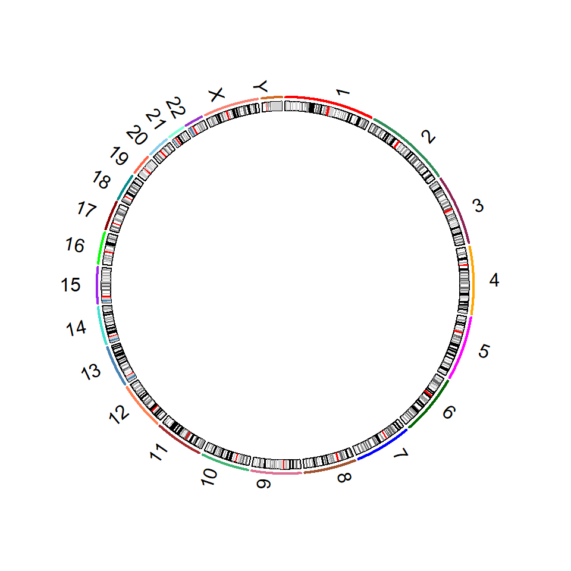
Create a 3D scatter plot of dnds, log(degree) and cai from the yeast data table
Try using the “highlight.3d” parameter
Hint:
install.packages("scatterplot3d")
library(scatterplot3d)
yeastdata<-read.table("yeast_properties.txt", header=TRUE)
scatterplot3d::scatterplot3d(yeastdata$dnds,
log(yeastdata$Degree),
yeastdata$cai,
highlight.3d=T)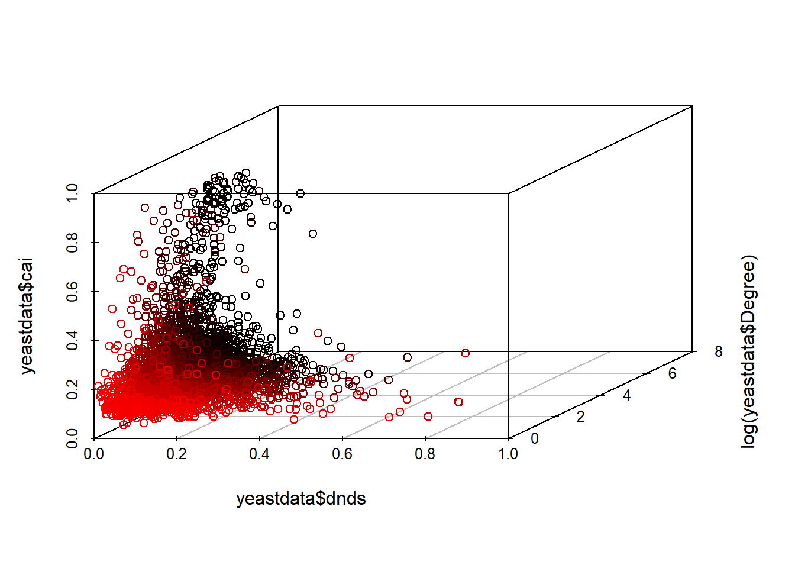
primer_input <- list()
for (J in 1:length(SEQUENCES)) {
primer_input[[J]] <- c(paste0("PRIMER_SEQUENCE_ID=",SEQNAME),
paste0("SEQUENCE=",toupper(SEQUENCE)),
"PRIMER_FILE_FLAG=0",
"PRIMER_EXPLAIN_FLAG=1",
"=")
}
proper_primer3_input <- unlist(primer_input)